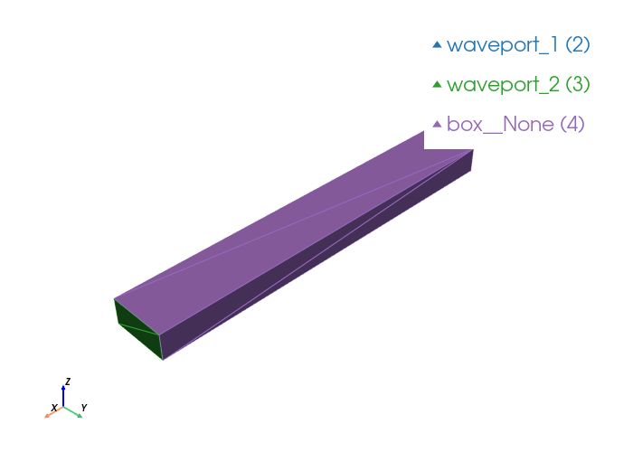

Waveguide Box#
A simple hollow rectangular waveguide with two waveports.
We build a single box, use selectors (build123d / cadquery-style) to pick the two end faces, define entities for the PEC volume and the two waveport surfaces, then generate the mesh, write the Palace config, run the simulation, and plot the S parameters.
import gmsh
from palacetoolkit.geometry import Selector
from palacetoolkit.mesh import (
Entity,
run_entity_pipeline,
create_graded_mesh,
generate_3d_mesh,
)
from palacetoolkit.simulation import (
generate_palace_config_from_entities,
run_palace,
)
from palacetoolkit.postpro import s_params, resonant_frequency
from palacetoolkit.viz import view_mesh
Geometry parameters#
Standard WR-90 waveguide dimensions (X-band) as an example.
width = 22.86e-3 # a (broad wall)
height = 10.16e-3 # b (narrow wall)
length = 150.0e-3 # waveguide length along x
# Frequency sweep
freq_min = 8 # 8 GHz
freq_max = 12 # 12 GHz
freq_step = 0.1 # 100 MHz steps
Build the box#
gmsh.initialize()
gmsh.option.setNumber("General.Terminal", 1)
gmsh.model.add("waveguide_box")
# Box from x=0 to x=length, y=0 to y=width, z=0 to z=height
box_dimtag = gmsh.model.occ.addBox(0, 0, 0, length, width, height)
gmsh.model.occ.synchronize()
print(f"Box volume tag: {box_dimtag}")
Box volume tag: 1
Select the two waveport faces#
Using the Selector API bound to the box volume — pick the faces at x=0 and x=length.
# Bind the selector to the box volume — only its boundary faces are considered.
sel = Selector((3, box_dimtag))
# cadquery-style: faces at a given coordinate
port1_faces = sel.faces_at_x(0.0)
port2_faces = sel.faces_at_x(length)
assert len(port1_faces) == 1, f"Expected 1 face at x=0, got {len(port1_faces)}"
assert len(port2_faces) == 1, f"Expected 1 face at x=length, got {len(port2_faces)}"
port1 = port1_faces[0]
port2 = port2_faces[0]
print(f"Port 1 (x=0): dim={port1.dim}, tag={port1.tag}")
print(f"Port 2 (x=length): dim={port2.dim}, tag={port2.tag}")
Port 1 (x=0): dim=2, tag=1
Port 2 (x=length): dim=2, tag=2
Define entities#
The box volume is a dielectric (vacuum, εᵣ=1). The two end faces are waveports. The exterior walls (box__None) will be treated as PEC automatically — any physical group not matching an entity definition and not containing “substrate” defaults to absorbing, so we need to explicitly mark the exterior as PEC.
entities = [
Entity(
name="box",
dim=3,
btype="dielectric",
mesh_order=0,
tags=[box_dimtag],
eps_r=1.0,
mu_r=1.0,
loss_tan=0.0,
),
Entity(
name="waveport_1",
dim=2,
btype="waveport",
mesh_order=1,
tags=[port1.tag],
mode=1,
excitation=True,
),
Entity(
name="waveport_2",
dim=2,
btype="waveport",
mesh_order=2,
tags=[port2.tag],
mode=1,
excitation=False,
),
# PEC walls — the exterior surface of the box
Entity(
name="box__None",
dim=2,
btype="pec",
mesh_order=3,
tags=[],
),
]
pg_map = run_entity_pipeline(entities)
print("Physical group map:", pg_map)
Physical group 'box' (dim=3): pg=1, tags=[1]
Physical group 'waveport_1' (dim=2): pg=2, tags=[1]
Physical group 'waveport_2' (dim=2): pg=3, tags=[2]
Physical group 'box__None' (dim=2): pg=4, tags=[3, 4, 5, 6]
Physical group map: {'waveport_1': 2, 'waveport_2': 3, 'box__None': 4, 'box': 1}
Mesh generation#
mesh_file = "waveguide_box.msh"
# Operating wavelength at the highest frequency (12 GHz)
c = 3e8
wavelength = c / freq_max
# Graded mesh: refine near geometric curves, ignore the box exterior
create_graded_mesh(
wavelength=wavelength,
ppw_near=6,
ppw_far=3,
ignore_entities=["box"],
)
generate_3d_mesh(entities, output_file=mesh_file)
gmsh.finalize()
print(f"Mesh written to {mesh_file}")
ignoring 4 curves from {'box__None'}
global: 8 curves, SizeMin=4166666.6667
ppw_near=6 ppw_far=3
SizeMax=8333333.3333 transition=6250000.0000
Mesh saved to waveguide_box.msh
Nodes: 9
Elements: 44
Mesh written to waveguide_box.msh
view_mesh(mesh_file, transparent_groups= "air_sphere__None")
Loading mesh file: waveguide_box.msh
Groups to render transparent: air_sphere__None
Mesh loaded successfully with 2 cell blocks
Found 12 triangles total
Physical group tags in mesh: {2: 'waveport_1', 3: 'waveport_2', 4: 'box__None'}

Palace configuration & simulation#
Build the Palace JSON config from the entity definitions and run the driven simulation.
config_path = "waveguide_box.json"
config = generate_palace_config_from_entities(
entity_defs=[e.to_dict() for e in entities],
pg_map=pg_map,
mesh_file=mesh_file,
output_file=config_path,
sim_type="driven",
freq_min=freq_min,
freq_max=freq_max,
freq_step=freq_step,
L0=1e-3,
solver_order=2,
)
run_palace(config_path)
Palace config written to waveguide_box.json
Running: /home/martin/.cache/palacetoolkit/runtime/palace-cpu-v0.17.0/bin/palace --serial /tmp/palacetoolkit-docs.dabfYK/docs/examples/waveguide_box.json
>> /home/martin/.cache/palacetoolkit/runtime/palace-cpu-v0.17.0/bin/palace-x86_64.bin /tmp/palacetoolkit-docs.dabfYK/docs/examples/waveguide_box.json
_____________ _______
_____ __ \____ __ /____ ____________
____ /_/ / __ ` / / __ ` / ___/ _ \
___ _____/ /_/ / / /_/ / /__/ ___/
/__/ \___,__/__/\___,__/\_____\_____/
--> Warning!
Output folder is not empty; program will overwrite content! (postpro/waveguide_box)
Git changeset ID: v0.17.0-194-g01f5d9bd1
Running with 1 MPI process, 1 OpenMP thread
Device configuration: omp,cpu
Memory configuration: host-std
libCEED backend: /cpu/self/xsmm/blocked
Characteristic length and time scales:
Lc = 1.500e-04 m, tc = 5.003e-04 ns
Finished partitioning mesh into 1 subdomain
Mesh curvature order: 1
Mesh bounding box:
(Xmin, Ymin, Zmin) = (+0.000e+00, +0.000e+00, +0.000e+00) m
(Xmax, Ymax, Zmax) = (+1.500e-04, +2.286e-05, +1.016e-05) m
Parallel Mesh Stats:
minimum average maximum total
vertices 9 9 9 9
edges 26 26 26 26
faces 30 30 30 30
elements 12 12 12 12
neighbors 0 0 0
minimum maximum
h 0.19398 0.19398
kappa 9.3178 30.1488
Estimated current per-rank memory usage is: Min. 52.1M, Max. 52.1M, Avg. 52.1M, Total 52.1M
Estimated current per-node memory usage is: Min. 52.1M, Max. 52.1M, Avg. 52.1M, Total 52.1M
Configuring Robin impedance BC for wave ports at attributes:
2: Index = 1, mode = 1, d = 0.000e+00 m, n = (-1.0,+0.0,+0.0)
3: Index = 2, mode = 1, d = 0.000e+00 m, n = (+1.0,+0.0,+0.0)
Configuring wave port excitation source term at attributes:
2: Index = 1
Configuring Dirichlet PEC BC at attributes:
4
Computing adaptive fast frequency response for:
Excitation with index 1 has contributions from:
Wave port 1
Beginning PROM construction offline phase:
41 points for frequency sweep over [8.000e+00, 1.200e+01] GHz
Assembling system matrices, number of global unknowns:
H1 (p = 2): 35, ND (p = 2): 112, RT (p = 2): 126
Operator assembly level: Partial
Mesh geometries:
Tetrahedron: P = 20, Q = 14 (quadrature order = 4)
Assembling multigrid hierarchy:
Level 0 (p = 1): 26 unknowns
Level 1 (p = 2): 112 unknowns
Level 0 (auxiliary) (p = 1): 9 unknowns
Level 1 (auxiliary) (p = 2): 35 unknowns
Residual norms for GMRES solve
0 (restart 0) KSP residual norm 3.999141e+04
1 (restart 0) KSP residual norm 1.249657e+02
2 (restart 0) KSP residual norm 3.999505e-01
3 (restart 0) KSP residual norm 6.613399e-03
4 (restart 0) KSP residual norm 3.386004e-03
5 (restart 0) KSP residual norm 1.497671e-03
6 (restart 0) KSP residual norm 3.555880e-04
GMRES solver converged in 6 iterations (avg. reduction factor: 4.552e-02)
Field energy E (1.347e-05 J) + H (9.736e-12 J) = 1.347e-05 J
Residual norms for GMRES solve
0 (restart 0) KSP residual norm 2.177040e+04
1 (restart 0) KSP residual norm 6.802889e+01
2 (restart 0) KSP residual norm 2.177248e-01
3 (restart 0) KSP residual norm 5.660582e-03
4 (restart 0) KSP residual norm 4.061582e-03
5 (restart 0) KSP residual norm 1.834917e-03
6 (restart 0) KSP residual norm 4.331531e-04
7 (restart 0) KSP residual norm 3.793051e-04
8 (restart 0) KSP residual norm 1.445930e-04
GMRES solver converged in 8 iterations (avg. reduction factor: 9.501e-02)
Field energy E (3.992e-06 J) + H (6.558e-12 J) = 3.992e-06 J
Residual norms for GMRES solve
0 (restart 0) KSP residual norm 2.996136e+04
1 (restart 0) KSP residual norm 9.362388e+01
2 (restart 0) KSP residual norm 2.996332e-01
3 (restart 0) KSP residual norm 5.908447e-03
4 (restart 0) KSP residual norm 3.704220e-03
5 (restart 0) KSP residual norm 1.649510e-03
6 (restart 0) KSP residual norm 3.870528e-04
7 (restart 0) KSP residual norm 3.553837e-04
8 (restart 0) KSP residual norm 1.304686e-04
GMRES solver converged in 8 iterations (avg. reduction factor: 9.013e-02)
Greedy iteration 1 (n = 2): ω* = 9.698e+00 GHz (3.049e-02), error = 4.513e-08, memory = 1/2
Field energy E (7.560e-06 J) + H (8.114e-12 J) = 7.560e-06 J
Residual norms for GMRES solve
0 (restart 0) KSP residual norm 2.487384e+04
1 (restart 0) KSP residual norm 7.772647e+01
2 (restart 0) KSP residual norm 2.487558e-01
3 (restart 0) KSP residual norm 5.706664e-03
4 (restart 0) KSP residual norm 3.913222e-03
5 (restart 0) KSP residual norm 1.755273e-03
6 (restart 0) KSP residual norm 4.128011e-04
7 (restart 0) KSP residual norm 3.716558e-04
8 (restart 0) KSP residual norm 1.384913e-04
GMRES solver converged in 8 iterations (avg. reduction factor: 9.294e-02)
Greedy iteration 2 (n = 3): ω* = 1.098e+01 GHz (3.452e-02), error = 2.388e-08, memory = 2/2
Field energy E (5.211e-06 J) + H (7.167e-12 J) = 5.211e-06 J
Adaptive sampling converged with 4 frequency samples:
n = 4, error = 2.388e-08, tol = 1.000e-03, memory = 2/2
Sampled frequencies (GHz): 8.000e+00, 1.200e+01, 9.698e+00, 1.098e+01
Sample errors: inf, inf, 4.513e-08, 2.388e-08
Total offline phase elapsed time: 7.07e-02 s
Beginning fast frequency sweep online phase
It 1/41: ω/2π = 8.000e+00 GHz (total elapsed time = 7.08e-02 s)
Sol. ||E|| = 4.009160e+04
Field energy E (1.347e-05 J) + H (9.837e-12 J) = 1.347e-05 J
S[1][1] = -1.000e+00-6.771e+05i, |S[1][1]| = +1.166e+02, arg(S[1][1]) = -9.000e+01
S[2][1] = -0.000e+00+7.624e+02i, |S[2][1]| = +5.764e+01, arg(S[2][1]) = +9.000e+01
Wrote fields to disk (Paraview) at step 1
It 2/41: ω/2π = 8.100e+00 GHz (total elapsed time = 7.79e-02 s)
Sol. ||E|| = 3.935289e+04
Field energy E (1.298e-05 J) + H (9.716e-12 J) = 1.298e-05 J
S[1][1] = -1.000e+00-6.605e+05i, |S[1][1]| = +1.164e+02, arg(S[1][1]) = -9.000e+01
S[2][1] = -0.000e+00+7.437e+02i, |S[2][1]| = +5.743e+01, arg(S[2][1]) = +9.000e+01
It 3/41: ω/2π = 8.200e+00 GHz (total elapsed time = 8.01e-02 s)
Sol. ||E|| = 3.863482e+04
Field energy E (1.251e-05 J) + H (9.598e-12 J) = 1.251e-05 J
S[1][1] = -1.000e+00-6.445e+05i, |S[1][1]| = +1.162e+02, arg(S[1][1]) = -9.000e+01
S[2][1] = -0.000e+00+7.257e+02i, |S[2][1]| = +5.721e+01, arg(S[2][1]) = +9.000e+01
It 4/41: ω/2π = 8.300e+00 GHz (total elapsed time = 8.14e-02 s)
Sol. ||E|| = 3.793853e+04
Field energy E (1.206e-05 J) + H (9.482e-12 J) = 1.206e-05 J
S[1][1] = -1.000e+00-6.290e+05i, |S[1][1]| = +1.160e+02, arg(S[1][1]) = -9.000e+01
S[2][1] = -0.000e+00+7.083e+02i, |S[2][1]| = +5.700e+01, arg(S[2][1]) = +9.000e+01
It 5/41: ω/2π = 8.400e+00 GHz (total elapsed time = 8.27e-02 s)
Sol. ||E|| = 3.726261e+04
Field energy E (1.164e-05 J) + H (9.369e-12 J) = 1.164e-05 J
S[1][1] = -1.000e+00-6.141e+05i, |S[1][1]| = +1.158e+02, arg(S[1][1]) = -9.000e+01
S[2][1] = -0.000e+00+6.915e+02i, |S[2][1]| = +5.680e+01, arg(S[2][1]) = +9.000e+01
It 6/41: ω/2π = 8.500e+00 GHz (total elapsed time = 8.39e-02 s)
Sol. ||E|| = 3.660696e+04
Field energy E (1.123e-05 J) + H (9.258e-12 J) = 1.123e-05 J
S[1][1] = -1.000e+00-5.998e+05i, |S[1][1]| = +1.156e+02, arg(S[1][1]) = -9.000e+01
S[2][1] = -0.000e+00+6.753e+02i, |S[2][1]| = +5.659e+01, arg(S[2][1]) = +9.000e+01
Wrote fields to disk (Paraview) at step 6
It 7/41: ω/2π = 8.600e+00 GHz (total elapsed time = 8.87e-02 s)
Sol. ||E|| = 3.597074e+04
Field energy E (1.084e-05 J) + H (9.151e-12 J) = 1.084e-05 J
S[1][1] = -1.000e+00-5.859e+05i, |S[1][1]| = +1.154e+02, arg(S[1][1]) = -9.000e+01
S[2][1] = -0.000e+00+6.597e+02i, |S[2][1]| = +5.639e+01, arg(S[2][1]) = +9.000e+01
It 8/41: ω/2π = 8.700e+00 GHz (total elapsed time = 9.00e-02 s)
Sol. ||E|| = 3.536244e+04
Field energy E (1.048e-05 J) + H (9.051e-12 J) = 1.048e-05 J
S[1][1] = -1.000e+00-5.728e+05i, |S[1][1]| = +1.152e+02, arg(S[1][1]) = -9.000e+01
S[2][1] = -0.000e+00+6.448e+02i, |S[2][1]| = +5.619e+01, arg(S[2][1]) = +9.000e+01
It 9/41: ω/2π = 8.800e+00 GHz (total elapsed time = 9.12e-02 s)
Sol. ||E|| = 3.474977e+04
Field energy E (1.012e-05 J) + H (8.942e-12 J) = 1.012e-05 J
S[1][1] = -1.000e+00-5.595e+05i, |S[1][1]| = +1.150e+02, arg(S[1][1]) = -9.000e+01
S[2][1] = -0.000e+00+6.300e+02i, |S[2][1]| = +5.599e+01, arg(S[2][1]) = +9.000e+01
It 10/41: ω/2π = 8.900e+00 GHz (total elapsed time = 9.24e-02 s)
Sol. ||E|| = 3.416767e+04
Field energy E (9.783e-06 J) + H (8.843e-12 J) = 9.783e-06 J
S[1][1] = -1.000e+00-5.471e+05i, |S[1][1]| = +1.148e+02, arg(S[1][1]) = -9.000e+01
S[2][1] = -0.000e+00+6.160e+02i, |S[2][1]| = +5.579e+01, arg(S[2][1]) = +9.000e+01
It 11/41: ω/2π = 9.000e+00 GHz (total elapsed time = 9.36e-02 s)
Sol. ||E|| = 3.359847e+04
Field energy E (9.460e-06 J) + H (8.744e-12 J) = 9.460e-06 J
S[1][1] = -1.000e+00-5.349e+05i, |S[1][1]| = +1.146e+02, arg(S[1][1]) = -9.000e+01
S[2][1] = -0.000e+00+6.024e+02i, |S[2][1]| = +5.560e+01, arg(S[2][1]) = +9.000e+01
Wrote fields to disk (Paraview) at step 11
It 12/41: ω/2π = 9.100e+00 GHz (total elapsed time = 9.83e-02 s)
Sol. ||E|| = 3.304728e+04
Field energy E (9.152e-06 J) + H (8.648e-12 J) = 9.152e-06 J
S[1][1] = -1.000e+00-5.233e+05i, |S[1][1]| = +1.144e+02, arg(S[1][1]) = -9.000e+01
S[2][1] = -0.000e+00+5.892e+02i, |S[2][1]| = +5.541e+01, arg(S[2][1]) = +9.000e+01
It 13/41: ω/2π = 9.200e+00 GHz (total elapsed time = 9.96e-02 s)
Sol. ||E|| = 3.251466e+04
Field energy E (8.859e-06 J) + H (8.557e-12 J) = 8.859e-06 J
S[1][1] = -1.000e+00-5.121e+05i, |S[1][1]| = +1.142e+02, arg(S[1][1]) = -9.000e+01
S[2][1] = -0.000e+00+5.766e+02i, |S[2][1]| = +5.522e+01, arg(S[2][1]) = +9.000e+01
It 14/41: ω/2π = 9.300e+00 GHz (total elapsed time = 1.01e-01 s)
Sol. ||E|| = 3.198682e+04
Field energy E (8.574e-06 J) + H (8.462e-12 J) = 8.574e-06 J
S[1][1] = -1.000e+00-5.010e+05i, |S[1][1]| = +1.140e+02, arg(S[1][1]) = -9.000e+01
S[2][1] = -0.000e+00+5.642e+02i, |S[2][1]| = +5.503e+01, arg(S[2][1]) = +9.000e+01
It 15/41: ω/2π = 9.400e+00 GHz (total elapsed time = 1.02e-01 s)
Sol. ||E|| = 3.147822e+04
Field energy E (8.304e-06 J) + H (8.372e-12 J) = 8.304e-06 J
S[1][1] = -1.000e+00-4.904e+05i, |S[1][1]| = +1.138e+02, arg(S[1][1]) = -9.000e+01
S[2][1] = -0.000e+00+5.522e+02i, |S[2][1]| = +5.484e+01, arg(S[2][1]) = +9.000e+01
It 16/41: ω/2π = 9.500e+00 GHz (total elapsed time = 1.03e-01 s)
Sol. ||E|| = 3.098299e+04
Field energy E (8.044e-06 J) + H (8.285e-12 J) = 8.044e-06 J
S[1][1] = -1.000e+00-4.802e+05i, |S[1][1]| = +1.136e+02, arg(S[1][1]) = -9.000e+01
S[2][1] = -0.000e+00+5.407e+02i, |S[2][1]| = +5.466e+01, arg(S[2][1]) = +9.000e+01
Wrote fields to disk (Paraview) at step 16
It 17/41: ω/2π = 9.600e+00 GHz (total elapsed time = 1.08e-01 s)
Sol. ||E|| = 3.049963e+04
Field energy E (7.795e-06 J) + H (8.198e-12 J) = 7.795e-06 J
S[1][1] = -1.000e+00-4.702e+05i, |S[1][1]| = +1.134e+02, arg(S[1][1]) = -9.000e+01
S[2][1] = -0.000e+00+5.295e+02i, |S[2][1]| = +5.448e+01, arg(S[2][1]) = +9.000e+01
It 18/41: ω/2π = 9.700e+00 GHz (total elapsed time = 1.09e-01 s)
Sol. ||E|| = 3.002927e+04
Field energy E (7.557e-06 J) + H (8.114e-12 J) = 7.557e-06 J
S[1][1] = -1.000e+00-4.606e+05i, |S[1][1]| = +1.133e+02, arg(S[1][1]) = -9.000e+01
S[2][1] = -0.000e+00+5.186e+02i, |S[2][1]| = +5.430e+01, arg(S[2][1]) = +9.000e+01
It 19/41: ω/2π = 9.800e+00 GHz (total elapsed time = 1.11e-01 s)
Sol. ||E|| = 2.957231e+04
Field energy E (7.329e-06 J) + H (8.032e-12 J) = 7.329e-06 J
S[1][1] = -1.000e+00-4.513e+05i, |S[1][1]| = +1.131e+02, arg(S[1][1]) = -9.000e+01
S[2][1] = -0.000e+00+5.081e+02i, |S[2][1]| = +5.412e+01, arg(S[2][1]) = +9.000e+01
It 20/41: ω/2π = 9.900e+00 GHz (total elapsed time = 1.12e-01 s)
Sol. ||E|| = 2.912383e+04
Field energy E (7.108e-06 J) + H (7.950e-12 J) = 7.108e-06 J
S[1][1] = -1.000e+00-4.421e+05i, |S[1][1]| = +1.129e+02, arg(S[1][1]) = -9.000e+01
S[2][1] = -0.000e+00+4.979e+02i, |S[2][1]| = +5.394e+01, arg(S[2][1]) = +9.000e+01
It 21/41: ω/2π = 1.000e+01 GHz (total elapsed time = 1.13e-01 s)
Sol. ||E|| = 2.868729e+04
Field energy E (6.896e-06 J) + H (7.870e-12 J) = 6.896e-06 J
S[1][1] = -1.000e+00-4.333e+05i, |S[1][1]| = +1.127e+02, arg(S[1][1]) = -9.000e+01
S[2][1] = -0.000e+00+4.879e+02i, |S[2][1]| = +5.377e+01, arg(S[2][1]) = +9.000e+01
Wrote fields to disk (Paraview) at step 21
It 22/41: ω/2π = 1.010e+01 GHz (total elapsed time = 1.18e-01 s)
Sol. ||E|| = 2.826516e+04
Field energy E (6.695e-06 J) + H (7.793e-12 J) = 6.695e-06 J
S[1][1] = -1.000e+00-4.249e+05i, |S[1][1]| = +1.126e+02, arg(S[1][1]) = -9.000e+01
S[2][1] = -0.000e+00+4.784e+02i, |S[2][1]| = +5.360e+01, arg(S[2][1]) = +9.000e+01
It 23/41: ω/2π = 1.020e+01 GHz (total elapsed time = 1.19e-01 s)
Sol. ||E|| = 2.784771e+04
Field energy E (6.499e-06 J) + H (7.715e-12 J) = 6.499e-06 J
S[1][1] = -1.000e+00-4.165e+05i, |S[1][1]| = +1.124e+02, arg(S[1][1]) = -9.000e+01
S[2][1] = -0.000e+00+4.690e+02i, |S[2][1]| = +5.342e+01, arg(S[2][1]) = +9.000e+01
It 24/41: ω/2π = 1.030e+01 GHz (total elapsed time = 1.20e-01 s)
Sol. ||E|| = 2.744416e+04
Field energy E (6.312e-06 J) + H (7.641e-12 J) = 6.312e-06 J
S[1][1] = -1.000e+00-4.085e+05i, |S[1][1]| = +1.122e+02, arg(S[1][1]) = -9.000e+01
S[2][1] = -0.000e+00+4.599e+02i, |S[2][1]| = +5.325e+01, arg(S[2][1]) = +9.000e+01
It 25/41: ω/2π = 1.040e+01 GHz (total elapsed time = 1.22e-01 s)
Sol. ||E|| = 2.704857e+04
Field energy E (6.131e-06 J) + H (7.567e-12 J) = 6.131e-06 J
S[1][1] = -1.000e+00-4.006e+05i, |S[1][1]| = +1.121e+02, arg(S[1][1]) = -9.000e+01
S[2][1] = -0.000e+00+4.511e+02i, |S[2][1]| = +5.309e+01, arg(S[2][1]) = +9.000e+01
It 26/41: ω/2π = 1.050e+01 GHz (total elapsed time = 1.23e-01 s)
Sol. ||E|| = 2.666312e+04
Field energy E (5.958e-06 J) + H (7.495e-12 J) = 5.958e-06 J
S[1][1] = -1.000e+00-3.930e+05i, |S[1][1]| = +1.119e+02, arg(S[1][1]) = -9.000e+01
S[2][1] = -0.000e+00+4.426e+02i, |S[2][1]| = +5.292e+01, arg(S[2][1]) = +9.000e+01
Wrote fields to disk (Paraview) at step 26
It 27/41: ω/2π = 1.060e+01 GHz (total elapsed time = 1.28e-01 s)
Sol. ||E|| = 2.628667e+04
Field energy E (5.791e-06 J) + H (7.424e-12 J) = 5.791e-06 J
S[1][1] = -1.000e+00-3.857e+05i, |S[1][1]| = +1.117e+02, arg(S[1][1]) = -9.000e+01
S[2][1] = -0.000e+00+4.343e+02i, |S[2][1]| = +5.276e+01, arg(S[2][1]) = +9.000e+01
It 28/41: ω/2π = 1.070e+01 GHz (total elapsed time = 1.29e-01 s)
Sol. ||E|| = 2.591890e+04
Field energy E (5.630e-06 J) + H (7.355e-12 J) = 5.630e-06 J
S[1][1] = -1.000e+00-3.785e+05i, |S[1][1]| = +1.116e+02, arg(S[1][1]) = -9.000e+01
S[2][1] = -0.000e+00+4.262e+02i, |S[2][1]| = +5.259e+01, arg(S[2][1]) = +9.000e+01
It 29/41: ω/2π = 1.080e+01 GHz (total elapsed time = 1.30e-01 s)
Sol. ||E|| = 2.556005e+04
Field energy E (5.475e-06 J) + H (7.287e-12 J) = 5.475e-06 J
S[1][1] = -1.000e+00-3.715e+05i, |S[1][1]| = +1.114e+02, arg(S[1][1]) = -9.000e+01
S[2][1] = -0.000e+00+4.183e+02i, |S[2][1]| = +5.243e+01, arg(S[2][1]) = +9.000e+01
It 30/41: ω/2π = 1.090e+01 GHz (total elapsed time = 1.31e-01 s)
Sol. ||E|| = 2.520882e+04
Field energy E (5.325e-06 J) + H (7.220e-12 J) = 5.325e-06 J
S[1][1] = -1.000e+00-3.647e+05i, |S[1][1]| = +1.112e+02, arg(S[1][1]) = -9.000e+01
S[2][1] = -0.000e+00+4.107e+02i, |S[2][1]| = +5.227e+01, arg(S[2][1]) = +9.000e+01
It 31/41: ω/2π = 1.100e+01 GHz (total elapsed time = 1.33e-01 s)
Sol. ||E|| = 2.486556e+04
Field energy E (5.181e-06 J) + H (7.154e-12 J) = 5.181e-06 J
S[1][1] = -1.000e+00-3.581e+05i, |S[1][1]| = +1.111e+02, arg(S[1][1]) = -9.000e+01
S[2][1] = -0.000e+00+4.032e+02i, |S[2][1]| = +5.211e+01, arg(S[2][1]) = +9.000e+01
Wrote fields to disk (Paraview) at step 31
It 32/41: ω/2π = 1.110e+01 GHz (total elapsed time = 1.38e-01 s)
Sol. ||E|| = 2.453076e+04
Field energy E (5.043e-06 J) + H (7.090e-12 J) = 5.043e-06 J
S[1][1] = -1.000e+00-3.517e+05i, |S[1][1]| = +1.109e+02, arg(S[1][1]) = -9.000e+01
S[2][1] = -0.000e+00+3.960e+02i, |S[2][1]| = +5.195e+01, arg(S[2][1]) = +9.000e+01
It 33/41: ω/2π = 1.120e+01 GHz (total elapsed time = 1.39e-01 s)
Sol. ||E|| = 2.420257e+04
Field energy E (4.909e-06 J) + H (7.026e-12 J) = 4.909e-06 J
S[1][1] = -1.000e+00-3.454e+05i, |S[1][1]| = +1.108e+02, arg(S[1][1]) = -9.000e+01
S[2][1] = -0.000e+00+3.890e+02i, |S[2][1]| = +5.180e+01, arg(S[2][1]) = +9.000e+01
It 34/41: ω/2π = 1.130e+01 GHz (total elapsed time = 1.40e-01 s)
Sol. ||E|| = 2.388212e+04
Field energy E (4.780e-06 J) + H (6.964e-12 J) = 4.780e-06 J
S[1][1] = -1.000e+00-3.394e+05i, |S[1][1]| = +1.106e+02, arg(S[1][1]) = -9.000e+01
S[2][1] = -0.000e+00+3.821e+02i, |S[2][1]| = +5.164e+01, arg(S[2][1]) = +9.000e+01
It 35/41: ω/2π = 1.140e+01 GHz (total elapsed time = 1.41e-01 s)
Sol. ||E|| = 2.356840e+04
Field energy E (4.655e-06 J) + H (6.903e-12 J) = 4.655e-06 J
S[1][1] = -1.000e+00-3.334e+05i, |S[1][1]| = +1.105e+02, arg(S[1][1]) = -9.000e+01
S[2][1] = -0.000e+00+3.754e+02i, |S[2][1]| = +5.149e+01, arg(S[2][1]) = +9.000e+01
It 36/41: ω/2π = 1.150e+01 GHz (total elapsed time = 1.43e-01 s)
Sol. ||E|| = 2.326229e+04
Field energy E (4.535e-06 J) + H (6.843e-12 J) = 4.535e-06 J
S[1][1] = -1.000e+00-3.277e+05i, |S[1][1]| = +1.103e+02, arg(S[1][1]) = -9.000e+01
S[2][1] = -0.000e+00+3.690e+02i, |S[2][1]| = +5.134e+01, arg(S[2][1]) = +9.000e+01
Wrote fields to disk (Paraview) at step 36
It 37/41: ω/2π = 1.160e+01 GHz (total elapsed time = 1.48e-01 s)
Sol. ||E|| = 2.296185e+04
Field energy E (4.418e-06 J) + H (6.784e-12 J) = 4.418e-06 J
S[1][1] = -1.000e+00-3.220e+05i, |S[1][1]| = +1.102e+02, arg(S[1][1]) = -9.000e+01
S[2][1] = -0.000e+00+3.626e+02i, |S[2][1]| = +5.119e+01, arg(S[2][1]) = +9.000e+01
It 38/41: ω/2π = 1.170e+01 GHz (total elapsed time = 1.49e-01 s)
Sol. ||E|| = 2.266771e+04
Field energy E (4.306e-06 J) + H (6.726e-12 J) = 4.306e-06 J
S[1][1] = -1.000e+00-3.165e+05i, |S[1][1]| = +1.100e+02, arg(S[1][1]) = -9.000e+01
S[2][1] = -0.000e+00+3.564e+02i, |S[2][1]| = +5.104e+01, arg(S[2][1]) = +9.000e+01
It 39/41: ω/2π = 1.180e+01 GHz (total elapsed time = 1.51e-01 s)
Sol. ||E|| = 2.238032e+04
Field energy E (4.197e-06 J) + H (6.669e-12 J) = 4.197e-06 J
S[1][1] = -1.000e+00-3.112e+05i, |S[1][1]| = +1.099e+02, arg(S[1][1]) = -9.000e+01
S[2][1] = -0.000e+00+3.504e+02i, |S[2][1]| = +5.089e+01, arg(S[2][1]) = +9.000e+01
It 40/41: ω/2π = 1.190e+01 GHz (total elapsed time = 1.53e-01 s)
Sol. ||E|| = 2.210057e+04
Field energy E (4.093e-06 J) + H (6.614e-12 J) = 4.093e-06 J
S[1][1] = -1.000e+00-3.060e+05i, |S[1][1]| = +1.097e+02, arg(S[1][1]) = -9.000e+01
S[2][1] = -0.000e+00+3.446e+02i, |S[2][1]| = +5.075e+01, arg(S[2][1]) = +9.000e+01
It 41/41: ω/2π = 1.200e+01 GHz (total elapsed time = 1.55e-01 s)
Sol. ||E|| = 2.182493e+04
Field energy E (3.992e-06 J) + H (6.559e-12 J) = 3.992e-06 J
S[1][1] = -1.000e+00-3.010e+05i, |S[1][1]| = +1.096e+02, arg(S[1][1]) = -9.000e+01
S[2][1] = -0.000e+00+3.389e+02i, |S[2][1]| = +5.060e+01, arg(S[2][1]) = +9.000e+01
Wrote fields to disk (Paraview) at step 41
Completed 0 iterations of adaptive mesh refinement (AMR):
Indicator norm = 8.816e-01, global unknowns = 112
Max. iterations = 0, tol. = 1.000e-02
Estimated peak per-rank memory usage is: Min. 64.5M, Max. 64.5M, Avg. 64.5M, Total 64.5M
Estimated peak per-node memory usage is: Min. 64.5M, Max. 64.5M, Avg. 64.5M, Total 64.5M
Elapsed Time Report (s) Min. Max. Avg.
==============================================================
Initialization 0.001 0.001 0.001
Mesh Preprocessing 0.000 0.000 0.000
Operator Construction 0.052 0.052 0.052
Wave Ports 0.013 0.013 0.013
Linear Solve 0.001 0.001 0.001
Setup 0.011 0.011 0.011
Preconditioner 0.024 0.024 0.024
Coarse Solve 0.001 0.001 0.001
PROM Construction 0.008 0.008 0.008
PROM Solve 0.000 0.000 0.000
Estimation 0.000 0.000 0.000
Construction 0.001 0.001 0.001
Solve 0.015 0.015 0.015
Postprocessing 0.011 0.011 0.011
Paraview 0.036 0.036 0.036
Disk IO 0.005 0.005 0.005
--------------------------------------------------------------
Total 0.708 0.708 0.708
Peak Memory Per-Node Total Total HWM
==============================================================
Initialization 2.8M 2.8M 2.8M
Mesh Preprocessing 860.0K 860.0K 3.6M
Operator Construction 5.5M 5.5M 9.1M
Wave Ports 1.3M 1.3M 10.4M
Linear Solve 0.0K 0.0K 10.4M
Setup 512.0K 512.0K 10.9M
Preconditioner 2.3M 2.3M 13.2M
Coarse Solve 1.0M 1.0M 14.2M
PROM Construction 0.0K 0.0K 14.2M
PROM Solve 256.0K 256.0K 14.5M
Estimation 0.0K 0.0K 14.5M
Construction 2.5M 2.5M 16.9M
Solve 0.0K 0.0K 16.9M
Postprocessing 0.0K 0.0K 16.9M
Paraview 0.0K 0.0K 16.9M
Disk IO 2.4M 2.4M 19.4M
--------------------------------------------------------------
Total 40.4M 40.4M 40.4M
S parameters#
from pathlib import Path
notebook_dir = Path().resolve()
csv_file = str(notebook_dir / "postpro" / "waveguide_box" / "port-S.csv")
fig, ax = s_params(csv_file)
f = resonant_frequency(csv_file)
print(f"Resonant frequency (min |S11|): {f:.3f} GHz")
fig
Resonant frequency (min |S11|): 12.000 GHz
<Figure size 1000x600 with 1 Axes>